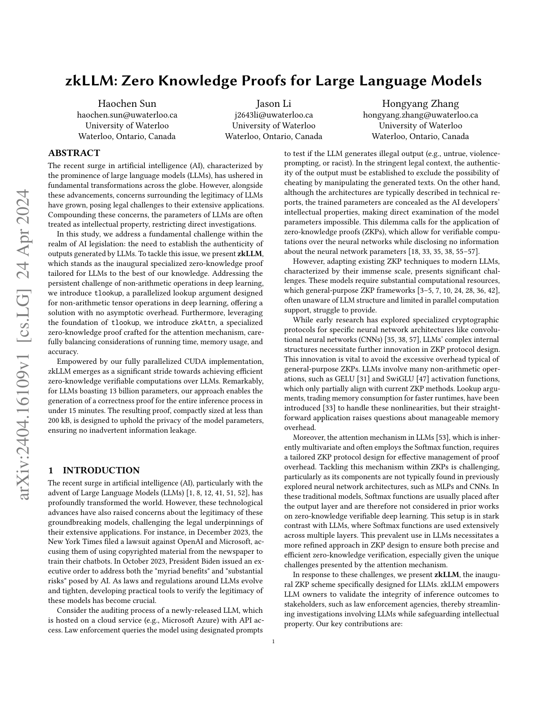
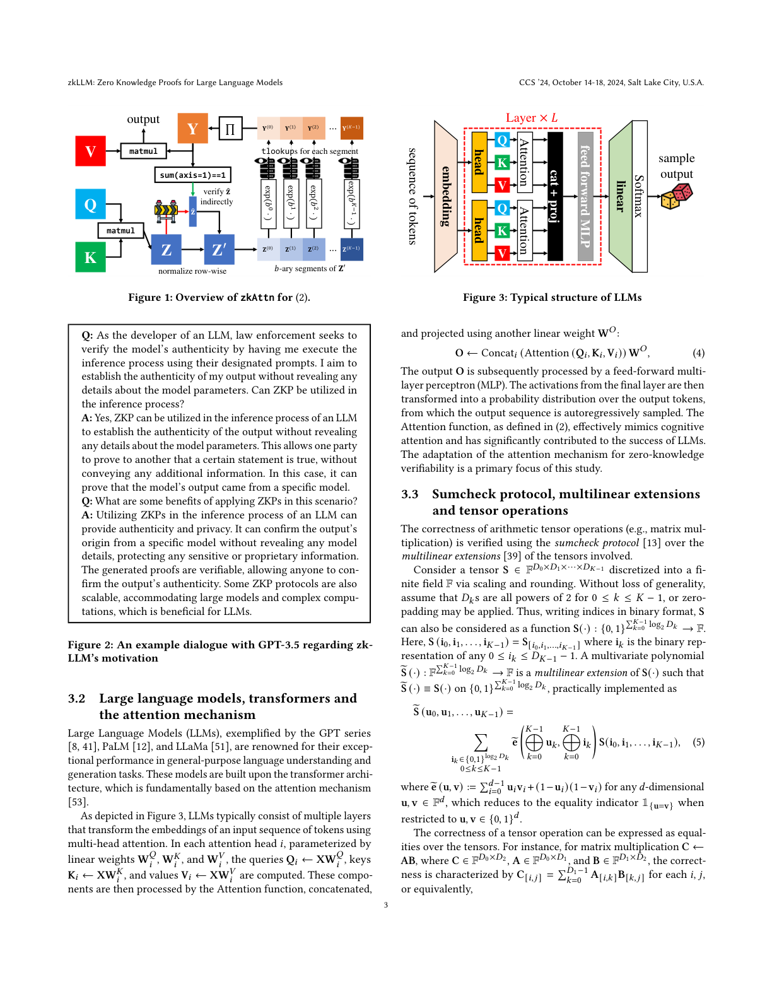
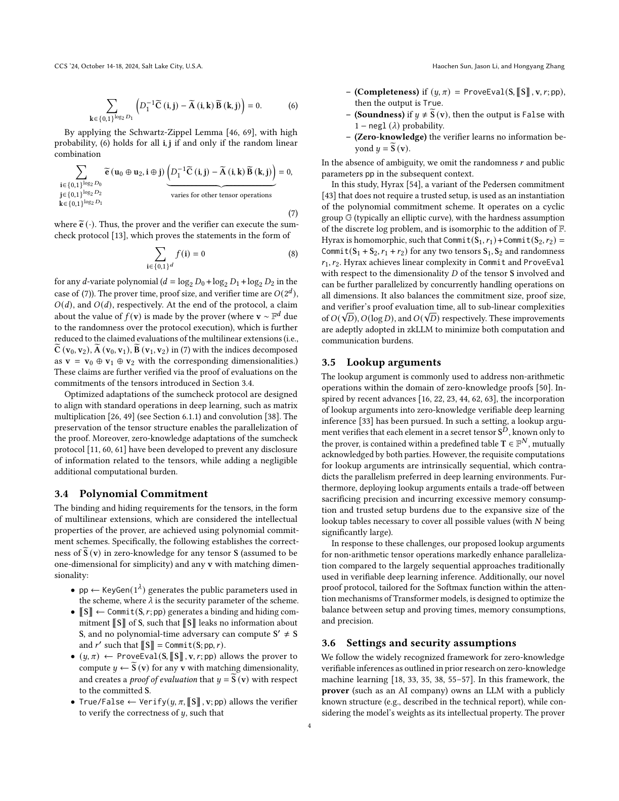
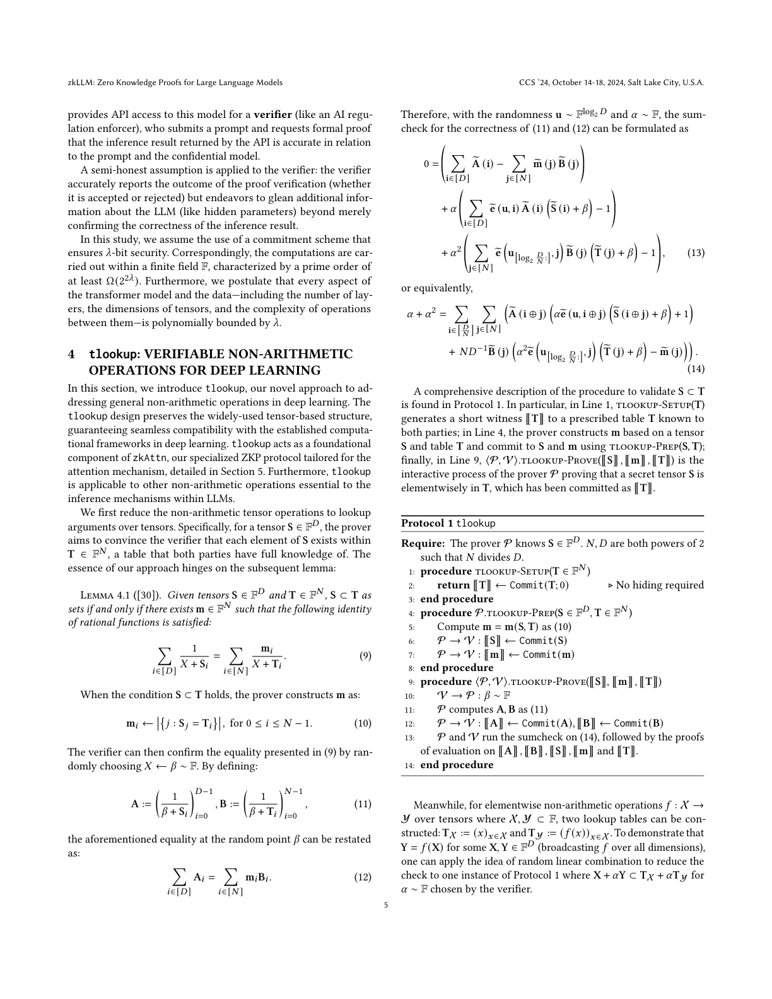
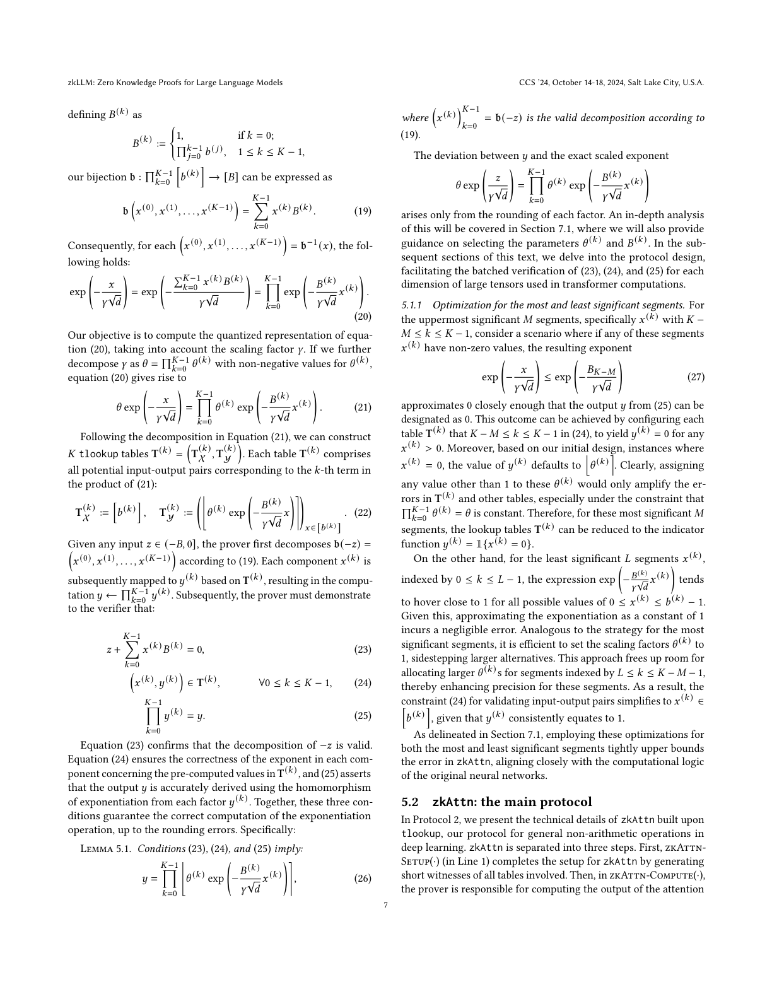

1. 研究動機
LLM 時代的驗證需求
隨著大型語言模型（LLM）在各領域的廣泛應用，一個關鍵問題浮現：如何驗證 AI 服務商確實使用了聲稱的模型？
現實場景
用戶付費使用 GPT-4 級別的 API，但無法驗證服務商是否偷偷替換成較弱的模型（如 GPT-3.5）來降低成本。zkLLM 透過零知識證明解決此信任問題。
現有方法的瓶頸
| 方法 | 13B 模型估計時間 |
|---|---|
| 傳統 SNARK | ~100,000 年 |
| EZKL + Halo2 | ~1,000 年 |
| zkVM (RISC Zero) | ~10 年 |
| zkLLM | < 15 分鐘 |
為何傳統方法失敗？
- 模型規模：7B-175B 參數，電路太大
- 計算密度：每個 token 數萬億 FLOPs
- Softmax 問題：指數運算在 ZK 中成本極高
- Attention：O(n²) 複雜度難以處理

2. tlookup：張量查表技術
核心創新
tlookup（Tensor Lookup）是 zkLLM 的核心貢獻，將傳統的向量查表擴展到高維張量，實現數量級的效率提升。
關鍵洞察
LLM 中的非線性運算（如 exp、GeLU）需要對大量元素逐一處理。tlookup 利用張量的結構特性，將 O(n·m) 的查表成本降低到 O(n + m)。
傳統 Plookup vs tlookup
傳統 Plookup
複雜度：O(|f| + |T|)
對於 n×m 矩陣中的每個元素，需要 n·m 次查表操作。
tlookup 擴展
利用張量結構：O(n + m)
透過行列分解和隨機線性組合，大幅減少承諾數量。
tlookup 協議流程
tlookup 協議：
1. Setup：
- 預計算查表 T（函數值域，如 exp 表）
- 建立多項式承諾結構
2. Prove：
- 對張量 F 進行行列分解
- 證明每行/列的查表關係
- 使用隨機線性組合壓縮多項式
3. Verify：
- 驗證分解一致性
- 驗證查表證明
- 常數次配對運算
3. zkAttn：零知識注意力機制
Attention 的 ZK 挑戰
標準 Attention 機制的數學定義：
其中 Softmax 包含指數運算和除法，在傳統 ZK 電路中代價極高。
zkAttn 的解決方案
五步驟處理策略
- 矩陣乘法 QKT：使用 sumcheck 協議驗證
- Softmax 偏移：利用 shift-invariance 特性調整每行
- 數值轉換：將結果轉為 K-digit base-b 負數表示
- exp 計算：透過 tlookup 查表取代電路
- 輸出乘法：驗證 Softmax 輸出與 V 的矩陣乘法

zkAttn 協議細節
zkAttn 協議：
輸入：Q, K, V ∈ F^{n×d}
步驟 1：矩陣乘法 Z = QK^T
使用 sumcheck 協議驗證矩陣乘法
步驟 2：Softmax shift-invariance
利用 exp(x-c)/Σexp(x-c) = exp(x)/Σexp(x)
對每行減去最大值，避免溢位
步驟 3：數值表示轉換
將 Z' 轉為 K-digit base-b 負數表示
使每個元素可用 tlookup 查表
步驟 4：exp 查表
使用 tlookup 對每個元素查表計算 exp
驗證 Softmax 分子正確性
步驟 5：輸出矩陣乘法
驗證 Y = softmax(Z) · V
使用 sumcheck 協議4. 系統架構
整體流程
zkLLM 將 LLM 推理分解為可證明的模組，每個 Transformer 層獨立處理。

記憶體管理策略
挑戰
| 13B 模型權重 | ~26 GB (FP16) |
| 電路表示 | 數百 GB |
| 證明中間數據 | TB 級 |
zkLLM 解決方案
- 分層處理：一次只處理一層
- 流式證明：邊計算邊證明
- 增量承諾：權重預承諾（離線）
最終記憶體使用：~50 GB
量化策略
精度考量
zkLLM 使用定點數表示：權重 INT8、激活值 INT16、累積器 INT32。這會導致困惑度（Perplexity）略有上升，但在大多數任務上可接受。
| 模型 | FP16 PPL | zkLLM PPL | 差異 |
|---|---|---|---|
| LLaMA-7B | 5.68 | 5.85 | +3% |
| LLaMA-13B | 5.09 | 5.23 | +2.7% |
5. 實驗結果
核心效能數據
各模型效能比較
| 模型 | 參數量 | 證明時間 | 證明大小 | 驗證時間 |
|---|---|---|---|---|
| LLaMA-7B | 7B | ~8 min | <200 KB | ~10 ms |
| LLaMA-13B | 13B | <15 min | <200 KB | ~10 ms |
| LLaMA-30B* | 30B | ~35 min | <200 KB | ~10 ms |
*30B 數據為論文估計值

與先前方法的加速比
關鍵成果
相較於 tlookup 之前的最佳方法，zkLLM 在 13B 模型上實現約 50 倍 的加速，並將可驗證的模型規模擴大 10 倍。
6. 結論與影響
主要貢獻
- tlookup：首個高維張量查表協議，將查表複雜度從 O(nm) 降至 O(n+m)
- zkAttn：專為 Transformer Attention 設計的高效 ZK 協議
- 實用系統：首次在消費級硬體上實現 13B 參數 LLM 的可驗證推理
應用場景
可驗證 AI 服務
用戶可驗證雲端 AI 服務商是否真正使用聲稱的模型，防止服務降級。
區塊鏈 AI 代理
智能合約可安全呼叫 LLM 進行決策，透過 ZK 證明確保計算正確性。
技術限制
當前限制
- 序列長度：標準支援 2048 tokens，長序列需更多資源
- 精度損失：量化導致約 3% 的困惑度上升
- 證明時間：相較即時推理仍有數量級差距
對後續研究的啟發
zkLLM 開創了 LLM 可驗證推理的先河，後續如 ZKLoRA 等工作在此基礎上探索更高效的驗證方案。未來方向包括：
- 支援更長序列（>4K tokens）
- 擴展到 70B+ 規模模型
- 實現接近即時的證明生成
- 整合硬體加速器
參考文獻
- Haochen Sun, Jason Li, Hongyang Zhang. "zkLLM: Zero Knowledge Proofs for Large Language Models." ACM CCS 2024, October 14-18, Salt Lake City, USA. arXiv | DOI
- Ariel Gabizon, Zachary J. Williamson. "plookup: A simplified polynomial protocol for lookup tables." IACR ePrint 2020/315. ePrint
- Ashish Vaswani, et al. "Attention Is All You Need." NeurIPS 2017. arXiv
- Hugo Touvron, et al. "LLaMA: Open and Efficient Foundation Language Models." arXiv 2023. arXiv
- Tiancheng Xie, et al. "zkCNN: Zero Knowledge Proofs for Convolutional Neural Network Predictions and Accuracy." ACM CCS 2021. DOI